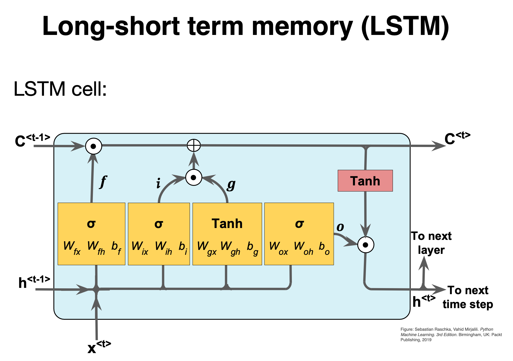
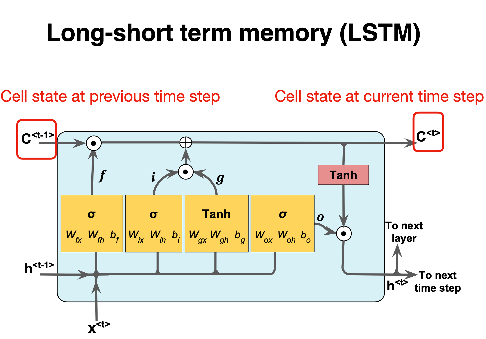
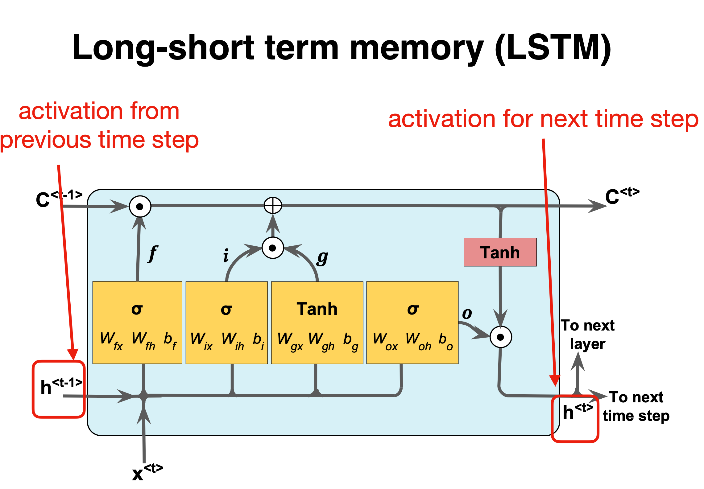

Advanced machine learning and data analysis for the physical sciences
March 13, 2025
Plans for the week March 10-14
- RNNs and discussion of Long-Short-Term memory
- Start discussion of Autoencoders (AEs)
- Links between Principal Component Analysis (PCA) and AE
Reading recommendations: RNNs and LSTMs
- For RNNs see Goodfellow et al chapter 10, see https://www.deeplearningbook.org/contents/rnn.html
- Reading suggestions for implementation of RNNs in PyTorch: Rashcka et al's text, chapter 15
- RNN video at https://youtu.be/PCgrgHgy26c?feature=shared
- New xLSTM, see Beck et al https://arxiv.org/abs/2405.04517. Exponential gating and modified memory structures boost xLSTM capabilities to perform favorably when compared to state-of-the-art Transformers and State Space Models, both in performance and scaling.
Reading recommendations: Autoencoders (AE)
- Goodfellow et al chapter 14, see https://www.deeplearningbook.org/contents/autoencoders.html
- Rashcka et al. Their chapter 17 contains a brief introduction only.
- Deep Learning Tutorial on AEs from Stanford University at http://ufldl.stanford.edu/tutorial/unsupervised/Autoencoders/
- Building AEs in Keras at https://blog.keras.io/building-autoencoders-in-keras.html
- Introduction to AEs in TensorFlow at https://www.tensorflow.org/tutorials/generative/autoencoder
- Grosse, University of Toronto, Lecture on AEs at http://www.cs.toronto.edu/~rgrosse/courses/csc321_2017/slides/lec20.pdf
- Bank et al on AEs at https://arxiv.org/abs/2003.05991
- Baldi and Hornik, Neural networks and principal component analysis: Learning from examples without local minima, Neural Networks 2, 53 (1989)
Gating mechanism: Long Short Term Memory (LSTM)
Besides a simple recurrent neural network layer, as discussed during the last two weeks, there are two other commonly used types of recurrent neural network layers: Long Short Term Memory (LSTM) and Gated Recurrent Unit (GRU). For a short introduction to these layers see https://medium.com/mindboard/lstm-vs-gru-experimental-comparison-955820c21e8b and https://medium.com/mindboard/lstm-vs-gru-experimental-comparison-955820c21e8b.
LSTM uses a memory cell for modeling long-range dependencies and avoid vanishing gradient problems. Capable of modeling longer term dependencies by having memory cells and gates that controls the information flow along with the memory cells.
- Introduced by Hochreiter and Schmidhuber (1997) who solved the problem of getting an RNN to remember things for a long time (like hundreds of time steps).
- They designed a memory cell using logistic and linear units with multiplicative interactions.
- Information gets into the cell whenever its “write” gate is on.
- The information stays in the cell so long as its keep gate is on.
- Information can be read from the cell by turning on its read gate.
The LSTM were first introduced to overcome the vanishing gradient problem.
Implementing a memory cell in a neural network
To preserve information for a long time in the activities of an RNN, we use a circuit that implements an analog memory cell.
- A linear unit that has a self-link with a weight of 1 will maintain its state.
- Information is stored in the cell by activating its write gate.
- Information is retrieved by activating the read gate.
- We can backpropagate through this circuit because logistics are have nice derivatives.
LSTM details
The LSTM is a unit cell that is made of three gates:
- the input gate,
- the forget gate,
- and the output gate.
It also introduces a cell state \( c \), which can be thought of as the long-term memory, and a hidden state \( h \) which can be thought of as the short-term memory.
Basic layout

LSTM details
The first stage is called the forget gate, where we combine the input at (say, time \( t \)), and the hidden cell state input at \( t-1 \), passing it through the Sigmoid activation function and then performing an element-wise multiplication, denoted by \( \otimes \).
It follows
$$ \mathbf{f}^{(t)} = \sigma(W_f\mathbf{x}^{(t)} + U_f\mathbf{h}^{(t-1)} + \mathbf{b}_f) $$where \( W \) and \( U \) are the weights respectively.
Comparing with a standard RNN

LSTM details I

LSTM details II

LSTM details III

Forget gate

The forget gate
The naming forget gate stems from the fact that the Sigmoid activation function's outputs are very close to \( 0 \) if the argument for the function is very negative, and \( 1 \) if the argument is very positive. Hence we can control the amount of information we want to take from the long-term memory.
Basic layout

Input gate
The next stage is the input gate, which consists of both a Sigmoid function (\( \sigma_i \)), which decide what percentage of the input will be stored in the long-term memory, and the \( \tanh_i \) function, which decide what is the full memory that can be stored in the long term memory. When these results are calculated and multiplied together, it is added to the cell state or stored in the long-term memory, denoted as \( \oplus \).
We have
$$ \mathbf{i}^{(t)} = \sigma_g(W_i\mathbf{x}^{(t)} + U_i\mathbf{h}^{(t-1)} + \mathbf{b}_i), $$and
$$ \mathbf{\tilde{c}}^{(t)} = \tanh(W_c\mathbf{x}^{(t)} + U_c\mathbf{h}^{(t-1)} + \mathbf{b}_c), $$again the \( W \) and \( U \) are the weights.
Short summary

Forget and input
The forget gate and the input gate together also update the cell state with the following equation,
$$ \mathbf{c}^{(t)} = \mathbf{f}^{(t)} \otimes \mathbf{c}^{(t-1)} + \mathbf{i}^{(t)} \otimes \mathbf{\tilde{c}}^{(t)}, $$where \( f^{(t)} \) and \( i^{(t)} \) are the outputs of the forget gate and the input gate, respectively.
Basic layout

Output gate
The final stage of the LSTM is the output gate, and its purpose is to update the short-term memory. To achieve this, we take the newly generated long-term memory and process it through a hyperbolic tangent (\( \tanh \)) function creating a potential new short-term memory. We then multiply this potential memory by the output of the Sigmoid function (\( \sigma_o \)). This multiplication generates the final output as well as the input for the next hidden cell (\( h^{\langle t \rangle} \)) within the LSTM cell.
We have
$$ \begin{aligned} \mathbf{o}^{(t)} &= \sigma_g(W_o\mathbf{x}^{(t)} + U_o\mathbf{h}^{(t-1)} + \mathbf{b}_o), \\ \mathbf{h}^{(t)} &= \mathbf{o}^{(t)} \otimes \sigma_h(\mathbf{c}^{(t)}). \\ \end{aligned} $$where \( \mathbf{W_o,U_o} \) are the weights of the output gate and \( \mathbf{b_o} \) is the bias of the output gate.
Summary of LSTM
LSTMs provide a basic approach for modeling long-range dependencies in sequences. If you wish to read more, see An Empirical Exploration of Recurrent Network Architectures, authored by Rafal Jozefowicz et al., Proceedings of ICML, 2342-2350, 2015).
An important recent development are so-called noting is a more recent method named gated recurrent unit (GRU), se for example the article by Junyoung Chung et al.,, at URL:"https://arxiv.org/abs/1412.3555. This article is an excellent read if you are interested in learning more about these modern RNN architectures
The GRUs have a simpler architecture than LSTMs. This leads to computationally more efficient methods, while their performance in some tasks, such as polyphonic music modeling, is comparable to LSTMs.
And recently Beck et al., see https://arxiv.org/abs/2405.04517, have demonstrated that exponential gating and modified memory structures boost xLSTM capabilities to perform favorably when compared to state-of-the-art Transformers and State Space Models, both in performance and scaling.
LSTM implementation using TensorFlow
"""
Key points:
1. The input images (28x28 pixels) are treated as sequences of 28 timesteps with 28 features each
2. The LSTM layer processes this sequential data
3. A final dense layer with softmax activation handles the classification
4. Typical accuracy ranges between 95-98% (lower than CNNs but reasonable for demonstration)
Note: LSTMs are not typically used for image classification (CNNs are more efficient), but this demonstrates how to adapt them for such tasks. Training might take longer compared to CNN architectures.
To improve performance, you could:
1. Add more LSTM layers
2. Use Bidirectional LSTMs
3. Increase the number of units
4. Add dropout for regularization
5. Use learning rate scheduling
"""
import tensorflow as tf
from tensorflow.keras.models import Sequential
from tensorflow.keras.layers import LSTM, Dense
from tensorflow.keras.utils import to_categorical
# Load and preprocess data
(x_train, y_train), (x_test, y_test) = tf.keras.datasets.mnist.load_data()
# Normalize pixel values to [0, 1]
x_train = x_train.astype('float32') / 255.0
x_test = x_test.astype('float32') / 255.0
# Reshape data for LSTM (samples, timesteps, features)
# MNIST images are 28x28, so we treat each image as 28 timesteps of 28 features
x_train = x_train.reshape((-1, 28, 28))
x_test = x_test.reshape((-1, 28, 28))
# Convert labels to one-hot encoding
y_train = to_categorical(y_train, 10)
y_test = to_categorical(y_test, 10)
# Build LSTM model
model = Sequential()
model.add(LSTM(128, input_shape=(28, 28))) # 128 LSTM units
model.add(Dense(10, activation='softmax'))
# Compile the model
model.compile(loss='categorical_crossentropy',
optimizer='adam',
metrics=['accuracy'])
# Display model summary
model.summary()
# Train the model
history = model.fit(x_train, y_train,
batch_size=64,
epochs=10,
validation_split=0.2)
# Evaluate on test data
test_loss, test_acc = model.evaluate(x_test, y_test, verbose=2)
print(f'\nTest accuracy: {test_acc:.4f}')
And the corresponding one with PyTorch
"""
Key components:
1. **Data Handling**: Uses PyTorch DataLoader with MNIST dataset
2. **LSTM Architecture**:
- Input sequence of 28 timesteps (image rows)
- 128 hidden units in LSTM layer
- Fully connected layer for classification
3. **Training**:
- Cross-entropy loss
- Adam optimizer
- Automatic GPU utilization if available
This implementation typically achieves **97-98% accuracy** after 10 epochs. The main differences from the TensorFlow/Keras version:
- Explicit device management (CPU/GPU)
- Manual training loop
- Different data loading pipeline
- More explicit tensor reshaping
To improve performance, you could:
1. Add dropout regularization
2. Use bidirectional LSTM
3. Implement learning rate scheduling
4. Add batch normalization
5. Increase model capacity (more layers/units)
"""
import torch
import torch.nn as nn
import torch.optim as optim
from torchvision import datasets, transforms
from torch.utils.data import DataLoader
# Hyperparameters
input_size = 28 # Number of features (pixels per row)
hidden_size = 128 # LSTM hidden state size
num_classes = 10 # Digits 0-9
num_epochs = 10 # Training iterations
batch_size = 64 # Batch size
learning_rate = 0.001
# Device configuration
device = torch.device('cuda' if torch.cuda.is_available() else 'cpu')
# MNIST dataset
transform = transforms.Compose([
transforms.ToTensor(),
transforms.Normalize((0.1307,), (0.3081,)) # MNIST mean and std
])
train_dataset = datasets.MNIST(root='./data',
train=True,
transform=transform,
download=True)
test_dataset = datasets.MNIST(root='./data',
train=False,
transform=transform)
train_loader = DataLoader(dataset=train_dataset,
batch_size=batch_size,
shuffle=True)
test_loader = DataLoader(dataset=test_dataset,
batch_size=batch_size,
shuffle=False)
# LSTM model
class LSTMModel(nn.Module):
def __init__(self, input_size, hidden_size, num_classes):
super(LSTMModel, self).__init__()
self.hidden_size = hidden_size
self.lstm = nn.LSTM(input_size, hidden_size, batch_first=True)
self.fc = nn.Linear(hidden_size, num_classes)
def forward(self, x):
# Reshape input to (batch_size, sequence_length, input_size)
x = x.reshape(-1, 28, 28)
# Forward propagate LSTM
out, _ = self.lstm(x) # out: (batch_size, seq_length, hidden_size)
# Decode the hidden state of the last time step
out = out[:, -1, :]
out = self.fc(out)
return out
# Initialize model
model = LSTMModel(input_size, hidden_size, num_classes).to(device)
# Loss and optimizer
criterion = nn.CrossEntropyLoss()
optimizer = optim.Adam(model.parameters(), lr=learning_rate)
# Training loop
total_step = len(train_loader)
for epoch in range(num_epochs):
model.train()
for i, (images, labels) in enumerate(train_loader):
images = images.to(device)
labels = labels.to(device)
# Forward pass
outputs = model(images)
loss = criterion(outputs, labels)
# Backward and optimize
optimizer.zero_grad()
loss.backward()
optimizer.step()
if (i+1) % 100 == 0:
print(f'Epoch [{epoch+1}/{num_epochs}], Step [{i+1}/{total_step}], Loss: {loss.item():.4f}')
# Test the model
model.eval()
with torch.no_grad():
correct = 0
total = 0
for images, labels in test_loader:
images = images.to(device)
labels = labels.to(device)
outputs = model(images)
_, predicted = torch.max(outputs.data, 1)
total += labels.size(0)
correct += (predicted == labels).sum().item()
print(f'Test Accuracy: {100 * correct / total:.2f}%')
print('Training finished.')
Autoencoders: Overarching view
Autoencoders are artificial neural networks capable of learning efficient representations of the input data (these representations are called codings) without any supervision (i.e., the training set is unlabeled). These codings typically have a much lower dimensionality than the input data, making autoencoders useful for dimensionality reduction.
Autoencoders learn to encode the input data into a lower-dimensional representation, and then decode it back to the original data. The goal of autoencoders is to minimize the reconstruction error, which measures how well the output matches the input. Autoencoders can be seen as a way of learning the latent features or hidden structure of the data, and they can be used for data compression, denoising, anomaly detection, and generative modeling.
Powerful detectors
More importantly, autoencoders act as powerful feature detectors, and they can be used for unsupervised pretraining of deep neural networks.
Lastly, they are capable of randomly generating new data that looks very similar to the training data; this is called a generative model. For example, you could train an autoencoder on pictures of faces, and it would then be able to generate new faces. Surprisingly, autoencoders work by simply learning to copy their inputs to their outputs. This may sound like a trivial task, but we will see that constraining the network in various ways can make it rather difficult. For example, you can limit the size of the internal representation, or you can add noise to the inputs and train the network to recover the original inputs. These constraints prevent the autoencoder from trivially copying the inputs directly to the outputs, which forces it to learn efficient ways of representing the data. In short, the codings are byproducts of the autoencoder’s attempt to learn the identity function under some constraints.
First introduction of AEs
Autoencoders were first introduced by Rumelhart, Hinton, and Williams in 1986 with the goal of learning to reconstruct the input observations with the lowest error possible.
Why would one want to learn to reconstruct the input observations? If you have problems imagining what that means, think of having a dataset made of images. An autoencoder would be an algorithm that can give as output an image that is as similar as possible to the input one. You may be confused, as there is no apparent reason of doing so. To better understand why autoencoders are useful we need a more informative (although not yet unambiguous) definition.
An autoencoder is a type of algorithm with the primary purpose of learning an "informative" representation of the data that can be used for different applications (see Bank, D., Koenigstein, N., and Giryes, R., Autoencoders) by learning to reconstruct a set of input observations well enough.
Autoencoder structure
Autoencoders are neural networks where the outputs are its own inputs. They are split into an encoder part which maps the input \( \boldsymbol{x} \) via a function \( f(\boldsymbol{x},\boldsymbol{W}) \) (this is the encoder part) to a so-called code part (or intermediate part) with the result \( \boldsymbol{h} \)
$$ \boldsymbol{h} = f(\boldsymbol{x},\boldsymbol{W})), $$where \( \boldsymbol{W} \) are the weights to be determined. The decoder parts maps, via its own parameters (weights given by the matrix \( \boldsymbol{V} \) and its own biases) to the final ouput
$$ \tilde{\boldsymbol{x}} = g(\boldsymbol{h},\boldsymbol{V})). $$The goal is to minimize the construction error.
Schematic image of an Autoencoder

More on the structure
In most typical architectures, the encoder and the decoder are neural networks since they can be easily trained with existing software libraries such as TensorFlow or PyTorch with back propagation.
In general, the encoder can be written as a function \( g \) that will depend on some parameters
$$ \mathbf{h}_{i} = g(\mathbf{x}_{i}), $$where \( \mathbf{h}_{i}\in\mathbb{R}^{q} \) (the latent feature representation) is the output of the encoder block where we evaluate it using the input \( \mathbf{x}_{i} \).
Decoder part
Note that we have \( g:\mathbb{R}^{n}\rightarrow\mathbb{R}^{q} \) The decoder and the output of the network \( \tilde{\mathbf{x}}_{i} \) can be written then as a second generic function of the latent features
$$ \tilde{\mathbf{x}}_{i} = f\left(\mathbf{h}_{i}\right) = f\left(g\left(\mathbf{x}_{i}\right)\right), $$where \( \tilde{\mathbf{x}}_{i}\mathbf{\in }\mathbb{R}^{n} \).
Training an autoencoder simply means finding the functions \( g(\cdot) \) and \( f(\cdot) \) that satisfy
$$ \textrm{arg}\min_{f,g}< \left[\Delta (\mathbf{x}_{i}, f(g\left(\mathbf{x}_{i}\right))\right]>. $$Typical AEs
The standard setup is done via a standard feed forward neural network (FFNN), or what is called a Feed Forward Autoencoder.
A typical FFNN architecture has an odd number of layers and is symmetrical with respect to the middle layer.
Typically, the first layer has a number of neurons \( n_{1} = n \) which equals the size of the input observation \( \mathbf{x}_{\mathbf{i}} \).
As we move toward the center of the network, the number of neurons in each layer drops in some measure. The middle layer usually has the smallest number of neurons. The fact that the number of neurons in this layer is smaller than the size of the input, is often called the bottleneck.
Feed Forward Autoencoder

Mirroring
In almost all practical applications, the layers after the middle one are a mirrored version of the layers before the middle one. For example, an autoencoder with three layers could have the following numbers of neurons:
\( n_{1} = 10 \), \( n_{2} = 5 \) and then \( n_{3} = n_{1} = 10 \) where the input dimension is equal to ten.
All the layers up to and including the middle one, make what is called the encoder, and all the layers from and including the middle one (up to the output) make what is called the decoder.
If the FFNN training is successful, the result will be a good approximation of the input \( \tilde{\mathbf{x}}_{i}\approx\mathbf{x}_{i} \).
What is essential to notice is that the decoder can reconstruct the input by using only a much smaller number of features than the input observations initially have.
Output of middle layer
The output of the middle layer \( \mathbf{h}_{\mathbf{i}} \) are also called a learned representation of the input observation \( \mathbf{x}_{i} \).
The encoder can reduce the number of dimensions of the input observation and create a learned representation \( \mathbf{h}_{\mathbf{i}}\mathbf{) } \) of the input that has a smaller dimension \( q < n \).
This learned representation is enough for the decoder to reconstruct the input accurately (if the autoencoder training was successful as intended).
Activation Function of the Output Layer
In autoencoders based on neural networks, the output layer's activation function plays a particularly important role. The most used functions are ReLU and Sigmoid.
ReLU
The ReLU activation function can assume all values in the range \( \left[0,\infty\right] \). As a remainder, its formula is
$$ \textrm{ReLU}\left(x\right) = \max\left(0,x\right). $$This choice is good when the input observations \(\mathbf{x}_{i}\) assume a wide range of positive values. If the input \( \mathbf{x}_{i} \) can assume negative values, the ReLU is, of course, a terrible choice, and the identity function is a much better choice. It is then common to replace to the ReLU with the so-called Leaky ReLu or just modified ReLU.
The ReLU activation function for the output layer is well suited for cases when the input observations \(\mathbf{x}_{i}\) assume a wide range of positive real values.
Sigmoid
The sigmoid function \( \sigma \) can assume all values in the range \( [0,1] \),
$$ \sigma\left(x\right) =\frac{1}{1+e^{-x}}. $$This activation function can only be used if the input observations \( \mathbf{x}_{i} \) are all in the range \( [0,1] \) or if you have normalized them to be in that range. Consider as an example the MNIST dataset. Each value of the input observation \( \mathbf{x}_{i} \) (one image) is the gray values of the pixels that can assume any value from 0 to 255. Normalizing the data by dividing the pixel values by 255 would make each observation (each image) have only pixel values between 0 and 1. In this case, the sigmoid would be a good choice for the output layer's activation function.
Cost/Loss Function
If an autoencoder is trying to solve a regression problem, the most common choice as a loss function is the Mean Square Error
$$ L_{\textrm{MSE}} = \textrm{MSE} = \frac{1}{n}\sum_{i = 1}^{n}\left\vert\vert\mathbf{x}_{i}-\tilde{\mathbf{x}}_{i}\right\vert\vert^{2}_2. $$Binary Cross-Entropy
If the activation function of the output layer of the AE is a sigmoid function, thus limiting neuron outputs to be between 0 and 1, and the input features are normalized to be between 0 and 1 we can use as loss function the binary cross-entropy. This cots/loss function is typically used in classification problems, but it works well for autoencoders. The formula for it is
$$ L_{\textrm{CE}} = -\frac{1}{n}\sum_{i = 1}^{n}\sum_{j = 1}^{p}[x_{j,i} \log\tilde{x}_{j,i}+\left(1-x_{j,i}\right)\log (1-\tilde{x}_{j,i})]. $$Reconstruction Error
The reconstruction error (RE) is a metric that gives you an indication of how good (or bad) the autoencoder was able to reconstruct the input observation \( \mathbf{x}_{i} \). The most typical RE used is the MSE
$$ \textrm{RE}\equiv \textrm{MSE} = \frac{1}{n}\sum_{i = 1}^{n}\left\vert\vert\mathbf{x}_{i}-\tilde{\mathbf{x}}_{i}\right\vert\vert^{2}_2. $$Implementation using TensorFlow
The code here has the following structure
- Data Loading: The MNIST dataset is loaded and normalized to a range of \( [0, 1] \). Each image is reshaped into a flat vector.
- Model Definition: An autoencoder architecture is defined with an encoder that compresses the input and a decoder that reconstructs it back to its original form.
- Training: The model is trained using binary crossentropy as the loss function over several epochs.
- Visualization: After training completes, it visualizes original images alongside their reconstructions.
### Autoencoder Implementation in TensorFlow/Keras
import numpy as np
import matplotlib.pyplot as plt
from tensorflow import keras
from tensorflow.keras import layers
from tensorflow.keras.datasets import mnist
# Load MNIST dataset
(x_train, _), (x_test, _) = mnist.load_data()
# Normalize the images to [0, 1] range and reshape them to (num_samples, 28*28)
x_train = x_train.astype('float32') / 255.
x_test = x_test.astype('float32') / 255.
x_train = x_train.reshape((len(x_train), -1))
x_test = x_test.reshape((len(x_test), -1))
# Define the Autoencoder Model
input_dim = x_train.shape[1]
encoding_dim = 64 # Dimension of the encoding layer
# Encoder
input_img = layers.Input(shape=(input_dim,))
encoded = layers.Dense(256, activation='relu')(input_img)
encoded = layers.Dense(encoding_dim, activation='relu')(encoded)
# Decoder
decoded = layers.Dense(256, activation='relu')(encoded)
decoded = layers.Dense(input_dim, activation='sigmoid')(decoded) # Use sigmoid since we normalized input between 0 and 1.
# Autoencoder Model
autoencoder = keras.Model(input_img, decoded)
# Compile the model
autoencoder.compile(optimizer='adam', loss='binary_crossentropy')
# Train the model
autoencoder.fit(x_train, x_train,
epochs=10,
batch_size=128,
shuffle=True,
validation_data=(x_test, x_test))
# Visualize some results after training
decoded_imgs = autoencoder.predict(x_test)
n = 8 # Number of digits to display
plt.figure(figsize=(9,4))
for i in range(n):
# Display original images on top row
ax = plt.subplot(2,n,i+1)
plt.imshow(x_test[i].reshape(28, 28), cmap='gray')
ax.axis('off')
# Display reconstructed images on bottom row
ax = plt.subplot(2,n,i+n+1)
plt.imshow(decoded_imgs[i].reshape(28, 28), cmap='gray')
ax.axis('off')
plt.show()
Implementation using PyTorch
The code here as the same structure as the previous one which uses TensorFlow.
- Data Loading: The MNIST dataset is loaded with normalization applied.
- Model Definition: An Autoencoder class defines both encoder and decoder networks.
- Training part: The network is trained over several epochs using Mean Squared Error (MSE) as the loss function.
- Visualization: After training completes, it visualizes original images alongside their reconstructions.
import torch
import torch.nn as nn
import torch.optim as optim
from torchvision import datasets, transforms
from torch.utils.data import DataLoader
import matplotlib.pyplot as plt
# Hyperparameters
batch_size = 128
learning_rate = 0.001
num_epochs = 10
# Transform to normalize the data
transform = transforms.Compose([
transforms.ToTensor(),
transforms.Normalize((0.5,), (0.5,))
])
# Load MNIST dataset
train_dataset = datasets.MNIST(root='./data', train=True, transform=transform, download=True)
train_loader = DataLoader(dataset=train_dataset, batch_size=batch_size, shuffle=True)
# Define the Autoencoder Model
class Autoencoder(nn.Module):
def __init__(self):
super(Autoencoder, self).__init__()
# Encoder layers
self.encoder = nn.Sequential(
nn.Linear(28 * 28, 256),
nn.ReLU(True),
nn.Linear(256, 64),
nn.ReLU(True)
)
# Decoder layers
self.decoder = nn.Sequential(
nn.Linear(64, 256),
nn.ReLU(True),
nn.Linear(256, 28 * 28),
nn.Tanh() # Use Tanh since we normalized input between -1 and 1.
)
def forward(self, x):
x = x.view(-1, 28 * 28) # Flatten the image tensor into vectors.
encoded = self.encoder(x)
decoded = self.decoder(encoded)
return decoded.view(-1, 1, 28, 28) # Reshape back to original image dimensions.
# Initialize model, loss function and optimizer
model = Autoencoder()
criterion = nn.MSELoss()
optimizer = optim.Adam(model.parameters(), lr=learning_rate)
# Training Loop
for epoch in range(num_epochs):
for data in train_loader:
img, _ = data
# Forward pass
output = model(img)
# Compute loss
loss = criterion(output, img)
# Backward pass and optimization
optimizer.zero_grad()
loss.backward()
optimizer.step()
print(f'Epoch [{epoch + 1}/{num_epochs}], Loss: {loss.item():.4f}')
# Visualize some results after training
with torch.no_grad():
sample_data = next(iter(train_loader))[0]
reconstructed_data = model(sample_data)
plt.figure(figsize=(9,4))
for i in range(8):
ax = plt.subplot(2,8,i+1)
plt.imshow(sample_data[i][0], cmap='gray')
ax.axis('off')
ax = plt.subplot(2,8,i+9)
plt.imshow(reconstructed_data[i][0], cmap='gray')
ax.axis('off')
plt.show()
Dimensionality reduction and links with Principal component analysis
The hope is that the training of the autoencoder can unravel some useful properties of the function \( f \). They are often trained with only single-layer neural networks (although deep networks can improve the training) and are essentially given by feed forward neural networks.
Linear functions
If the function \( f \) and \( g \) are given by a linear dependence on the weight matrices \( \boldsymbol{W} \) and \( \boldsymbol{V} \), we can show that for a regression case, by miminizing the mean squared error between \( \boldsymbol{x} \) and \( \tilde{\boldsymbol{x}} \), the autoencoder learns the same subspace as the standard principal component analysis (PCA).
In order to see this, we define then
$$ \boldsymbol{h} = f(\boldsymbol{x},\boldsymbol{W}))=\boldsymbol{W}\boldsymbol{x}, $$and
$$ \tilde{\boldsymbol{x}} = g(\boldsymbol{h},\boldsymbol{V}))=\boldsymbol{V}\boldsymbol{h}=\boldsymbol{V}\boldsymbol{W}\boldsymbol{x}. $$AE mean-squared error
With the above linear dependence we can in turn define our optimization problem in terms of the optimization of the mean-squared error, that is we wish to optimize
$$ \min_{\boldsymbol{W},\boldsymbol{V}\in {\mathbb{R}}}\frac{1}{n}\sum_{i=0}^{n-1}\left(x_i-\tilde{x}_i\right)^2=\frac{1}{n}\vert\vert \boldsymbol{x}-\boldsymbol{V}\boldsymbol{W}\boldsymbol{x}\vert\vert_2^2, $$where we have used the definition of a norm-2 vector, that is
$$ \vert\vert \boldsymbol{x}\vert\vert_2 = \sqrt{\sum_i x_i^2}. $$Dimensionality reduction
This is equivalent to our functions learning the same subspace as the PCA method. This means that we can interpret AEs as a dimensionality reduction method. To see this, we need to remind ourselves about the PCA method.
What is the Principal Component Analysis (PCA)?
PCA is a linear transformation that finds the directions of maximum variance in the data, and projects the data onto a lower-dimensional space. These directions are called principal components, and they are orthogonal to each other. PCA can be seen as a way of compressing the data by discarding the components that have low variance and retain the most important ones. PCA can be applied to both supervised and unsupervised learning problems, and it is often used for data visualization, feature extraction, and noise reduction.
A linear autoencoder can be shown to be equal to the PCA. In this lectures we will try to expose these ideas.
Basic ideas of the PCA
The principal component analysis deals with the problem of fitting a low-dimensional affine subspace \( S \) of dimension \( d \) much smaller than the total dimension \( D \) of the problem at hand (our data set). Mathematically it can be formulated as a statistical problem or a geometric problem. In our discussion of the theorem for the classical PCA, we will stay with a statistical approach. Historically, the PCA was first formulated in a statistical setting in order to estimate the principal component of a multivariate random variable.
Ingredients of the PCA
We have a data set defined by a design/feature matrix \( \boldsymbol{X} \) (see below for its definition)
- Each data point is determined by \( p \) extrinsic (measurement) variables
- We may want to ask the following question: Are there fewer intrinsic variables (say \( d < < p \)) that still approximately describe the data?
- If so, these intrinsic variables may tell us something important and finding these intrinsic variables is what dimension reduction methods do.
A good read is for example Vidal, Ma and Sastry.
Introducing the Covariance and Correlation functions
Before we discuss the PCA theorem, we need to remind ourselves about the definition of the covariance and the correlation function. These are quantities
Suppose we have defined two vectors \( \hat{x} \) and \( \hat{y} \) with \( n \) elements each. The covariance matrix \( \boldsymbol{C} \) is defined as
$$ \boldsymbol{C}[\boldsymbol{x},\boldsymbol{y}] = \begin{bmatrix} \mathrm{cov}[\boldsymbol{x},\boldsymbol{x}] & \mathrm{cov}[\boldsymbol{x},\boldsymbol{y}] \\ \mathrm{cov}[\boldsymbol{y},\boldsymbol{x}] & \mathrm{cov}[\boldsymbol{y},\boldsymbol{y}] \\ \end{bmatrix}, $$where for example
$$ \mathrm{cov}[\boldsymbol{x},\boldsymbol{y}] =\frac{1}{n} \sum_{i=0}^{n-1}(x_i- \overline{x})(y_i- \overline{y}). $$Covariance matrix
With this definition and recalling that the variance is defined as
$$ \mathrm{var}[\boldsymbol{x}]=\frac{1}{n} \sum_{i=0}^{n-1}(x_i- \overline{x})^2, $$we can rewrite the covariance matrix as
$$ \boldsymbol{C}[\boldsymbol{x},\boldsymbol{y}] = \begin{bmatrix} \mathrm{var}[\boldsymbol{x}] & \mathrm{cov}[\boldsymbol{x},\boldsymbol{y}] \\ \mathrm{cov}[\boldsymbol{x},\boldsymbol{y}] & \mathrm{var}[\boldsymbol{y}] \\ \end{bmatrix}. $$More on the covariance
The covariance takes values between zero and infinity and may thus lead to problems with loss of numerical precision for particularly large values. It is common to scale the covariance matrix by introducing instead the correlation matrix defined via the so-called correlation function
$$ \mathrm{corr}[\boldsymbol{x},\boldsymbol{y}]=\frac{\mathrm{cov}[\boldsymbol{x},\boldsymbol{y}]}{\sqrt{\mathrm{var}[\boldsymbol{x}] \mathrm{var}[\boldsymbol{y}]}}. $$The correlation function is then given by values \( \mathrm{corr}[\boldsymbol{x},\boldsymbol{y}] \in [-1,1] \). This avoids eventual problems with too large values. We can then define the correlation matrix for the two vectors \( \boldsymbol{x} \) and \( \boldsymbol{y} \) as
$$ \boldsymbol{K}[\boldsymbol{x},\boldsymbol{y}] = \begin{bmatrix} 1 & \mathrm{corr}[\boldsymbol{x},\boldsymbol{y}] \\ \mathrm{corr}[\boldsymbol{y},\boldsymbol{x}] & 1 \\ \end{bmatrix}, $$In the above example this is the function we constructed using pandas.
Reminding ourselves about Linear Regression
In our derivation of the various regression algorithms like Ordinary Least Squares or Ridge regression we defined the design/feature matrix \( \boldsymbol{X} \) as
$$ \boldsymbol{X}=\begin{bmatrix} x_{0,0} & x_{0,1} & x_{0,2}& \dots & \dots x_{0,p-1}\\ x_{1,0} & x_{1,1} & x_{1,2}& \dots & \dots x_{1,p-1}\\ x_{2,0} & x_{2,1} & x_{2,2}& \dots & \dots x_{2,p-1}\\ \dots & \dots & \dots & \dots \dots & \dots \\ x_{n-2,0} & x_{n-2,1} & x_{n-2,2}& \dots & \dots x_{n-2,p-1}\\ x_{n-1,0} & x_{n-1,1} & x_{n-1,2}& \dots & \dots x_{n-1,p-1}\\ \end{bmatrix}, $$with \( \boldsymbol{X}\in {\mathbb{R}}^{n\times p} \), with the predictors/features \( p \) refering to the column numbers and the entries \( n \) being the row elements.
Rewriting the matrix \( \boldsymbol{X} \)
We can rewrite the design/feature matrix in terms of its column vectors as
$$ \boldsymbol{X}=\begin{bmatrix} \boldsymbol{x}_0 & \boldsymbol{x}_1 & \boldsymbol{x}_2 & \dots & \dots & \boldsymbol{x}_{p-1}\end{bmatrix}, $$with a given vector
$$ \boldsymbol{x}_i^T = \begin{bmatrix}x_{0,i} & x_{1,i} & x_{2,i}& \dots & \dots x_{n-1,i}\end{bmatrix}. $$Simple Example
With these definitions, we can now rewrite our \( 2\times 2 \) correlation/covariance matrix in terms of a moe general design/feature matrix \( \boldsymbol{X}\in {\mathbb{R}}^{n\times p} \). This leads to a \( p\times p \) covariance matrix for the vectors \( \boldsymbol{x}_i \) with \( i=0,1,\dots,p-1 \)
$$ \boldsymbol{C}[\boldsymbol{x}] = \begin{bmatrix} \mathrm{var}[\boldsymbol{x}_0] & \mathrm{cov}[\boldsymbol{x}_0,\boldsymbol{x}_1] & \mathrm{cov}[\boldsymbol{x}_0,\boldsymbol{x}_2] & \dots & \dots & \mathrm{cov}[\boldsymbol{x}_0,\boldsymbol{x}_{p-1}]\\ \mathrm{cov}[\boldsymbol{x}_1,\boldsymbol{x}_0] & \mathrm{var}[\boldsymbol{x}_1] & \mathrm{cov}[\boldsymbol{x}_1,\boldsymbol{x}_2] & \dots & \dots & \mathrm{cov}[\boldsymbol{x}_1,\boldsymbol{x}_{p-1}]\\ \mathrm{cov}[\boldsymbol{x}_2,\boldsymbol{x}_0] & \mathrm{cov}[\boldsymbol{x}_2,\boldsymbol{x}_1] & \mathrm{var}[\boldsymbol{x}_2] & \dots & \dots & \mathrm{cov}[\boldsymbol{x}_2,\boldsymbol{x}_{p-1}]\\ \dots & \dots & \dots & \dots & \dots & \dots \\ \dots & \dots & \dots & \dots & \dots & \dots \\ \mathrm{cov}[\boldsymbol{x}_{p-1},\boldsymbol{x}_0] & \mathrm{cov}[\boldsymbol{x}_{p-1},\boldsymbol{x}_1] & \mathrm{cov}[\boldsymbol{x}_{p-1},\boldsymbol{x}_{2}] & \dots & \dots & \mathrm{var}[\boldsymbol{x}_{p-1}]\\ \end{bmatrix}. $$The Correlation Matrix
The correlation matrix
$$ \boldsymbol{K}[\boldsymbol{x}] = \begin{bmatrix} 1 & \mathrm{corr}[\boldsymbol{x}_0,\boldsymbol{x}_1] & \mathrm{corr}[\boldsymbol{x}_0,\boldsymbol{x}_2] & \dots & \dots & \mathrm{corr}[\boldsymbol{x}_0,\boldsymbol{x}_{p-1}]\\ \mathrm{corr}[\boldsymbol{x}_1,\boldsymbol{x}_0] & 1 & \mathrm{corr}[\boldsymbol{x}_1,\boldsymbol{x}_2] & \dots & \dots & \mathrm{corr}[\boldsymbol{x}_1,\boldsymbol{x}_{p-1}]\\ \mathrm{corr}[\boldsymbol{x}_2,\boldsymbol{x}_0] & \mathrm{corr}[\boldsymbol{x}_2,\boldsymbol{x}_1] & 1 & \dots & \dots & \mathrm{corr}[\boldsymbol{x}_2,\boldsymbol{x}_{p-1}]\\ \dots & \dots & \dots & \dots & \dots & \dots \\ \dots & \dots & \dots & \dots & \dots & \dots \\ \mathrm{corr}[\boldsymbol{x}_{p-1},\boldsymbol{x}_0] & \mathrm{corr}[\boldsymbol{x}_{p-1},\boldsymbol{x}_1] & \mathrm{corr}[\boldsymbol{x}_{p-1},\boldsymbol{x}_{2}] & \dots & \dots & 1\\ \end{bmatrix}. $$Numpy Functionality
The Numpy function np.cov calculates the covariance elements using the factor \( 1/(n-1) \) instead of \( 1/n \) since it assumes we do not have the exact mean values. The following simple function uses the np.vstack function which takes each vector of dimension \( 1\times n \) and produces a \( 2\times n \) matrix \( \boldsymbol{W} \)
$$ \boldsymbol{W}^T = \begin{bmatrix} x_0 & y_0 \\ x_1 & y_1 \\ x_2 & y_2\\ \dots & \dots \\ x_{n-2} & y_{n-2}\\ x_{n-1} & y_{n-1} & \end{bmatrix}, $$which in turn is converted into into the \( 2\times 2 \) covariance matrix \( \boldsymbol{C} \) via the Numpy function np.cov(). We note that we can also calculate the mean value of each set of samples \( \boldsymbol{x} \) etc using the Numpy function np.mean(x). We can also extract the eigenvalues of the covariance matrix through the np.linalg.eig() function.
# Importing various packages
import numpy as np
n = 100
x = np.random.normal(size=n)
print(np.mean(x))
y = 4+3*x+np.random.normal(size=n)
print(np.mean(y))
W = np.vstack((x, y))
C = np.cov(W)
print(C)
Correlation Matrix again
The previous example can be converted into the correlation matrix by simply scaling the matrix elements with the variances. We should also subtract the mean values for each column. This leads to the following code which sets up the correlations matrix for the previous example in a more brute force way. Here we scale the mean values for each column of the design matrix, calculate the relevant mean values and variances and then finally set up the \( 2\times 2 \) correlation matrix (since we have only two vectors).
import numpy as np
n = 100
# define two vectors
x = np.random.random(size=n)
y = 4+3*x+np.random.normal(size=n)
#scaling the x and y vectors
x = x - np.mean(x)
y = y - np.mean(y)
variance_x = np.sum(x@x)/n
variance_y = np.sum(y@y)/n
print(variance_x)
print(variance_y)
cov_xy = np.sum(x@y)/n
cov_xx = np.sum(x@x)/n
cov_yy = np.sum(y@y)/n
C = np.zeros((2,2))
C[0,0]= cov_xx/variance_x
C[1,1]= cov_yy/variance_y
C[0,1]= cov_xy/np.sqrt(variance_y*variance_x)
C[1,0]= C[0,1]
print(C)
We see that the matrix elements along the diagonal are one as they should be and that the matrix is symmetric. Furthermore, diagonalizing this matrix we easily see that it is a positive definite matrix.
The above procedure with numpy can be made more compact if we use pandas.
Using Pandas
We whow here how we can set up the correlation matrix using pandas, as done in this simple code
import numpy as np
import pandas as pd
n = 10
x = np.random.normal(size=n)
x = x - np.mean(x)
y = 4+3*x+np.random.normal(size=n)
y = y - np.mean(y)
X = (np.vstack((x, y))).T
print(X)
Xpd = pd.DataFrame(X)
print(Xpd)
correlation_matrix = Xpd.corr()
print(correlation_matrix)
Links with the Design Matrix
We can rewrite the covariance matrix in a more compact form in terms of the design/feature matrix \( \boldsymbol{X} \) as
$$ \boldsymbol{C}[\boldsymbol{x}] = \frac{1}{n}\boldsymbol{X}^T\boldsymbol{X}= \mathbb{E}[\boldsymbol{X}^T\boldsymbol{X}]. $$To see this let us simply look at a design matrix \( \boldsymbol{X}\in {\mathbb{R}}^{2\times 2} \)
$$ \boldsymbol{X}=\begin{bmatrix} x_{00} & x_{01}\\ x_{10} & x_{11}\\ \end{bmatrix}=\begin{bmatrix} \boldsymbol{x}_{0} & \boldsymbol{x}_{1}\\ \end{bmatrix}. $$Computing the Expectation Values
If we then compute the expectation value
$$ \mathbb{E}[\boldsymbol{X}^T\boldsymbol{X}] = \frac{1}{n}\boldsymbol{X}^T\boldsymbol{X}=\begin{bmatrix} x_{00}^2+x_{01}^2 & x_{00}x_{10}+x_{01}x_{11}\\ x_{10}x_{00}+x_{11}x_{01} & x_{10}^2+x_{11}^2\\ \end{bmatrix}, $$which is just
$$ \boldsymbol{C}[\boldsymbol{x}_0,\boldsymbol{x}_1] = \boldsymbol{C}[\boldsymbol{x}]=\begin{bmatrix} \mathrm{var}[\boldsymbol{x}_0] & \mathrm{cov}[\boldsymbol{x}_0,\boldsymbol{x}_1] \\ \mathrm{cov}[\boldsymbol{x}_1,\boldsymbol{x}_0] & \mathrm{var}[\boldsymbol{x}_1] \\ \end{bmatrix}, $$where we wrote $$\boldsymbol{C}[\boldsymbol{x}_0,\boldsymbol{x}_1] = \boldsymbol{C}[\boldsymbol{x}]$$ to indicate that this the covariance of the vectors \( \boldsymbol{x} \) of the design/feature matrix \( \boldsymbol{X} \).
It is easy to generalize this to a matrix \( \boldsymbol{X}\in {\mathbb{R}}^{n\times p} \).
Towards the PCA theorem
We have that the covariance matrix (the correlation matrix involves a simple rescaling) is given as
$$ \boldsymbol{C}[\boldsymbol{x}] = \frac{1}{n}\boldsymbol{X}^T\boldsymbol{X}= \mathbb{E}[\boldsymbol{X}^T\boldsymbol{X}]. $$Let us now assume that we can perform a series of orthogonal transformations where we employ some orthogonal matrices \( \boldsymbol{S} \). These matrices are defined as \( \boldsymbol{S}\in {\mathbb{R}}^{p\times p} \) and obey the orthogonality requirements \( \boldsymbol{S}\boldsymbol{S}^T=\boldsymbol{S}^T\boldsymbol{S}=\boldsymbol{I} \). The matrix can be written out in terms of the column vectors \( \boldsymbol{s}_i \) as \( \boldsymbol{S}=[\boldsymbol{s}_0,\boldsymbol{s}_1,\dots,\boldsymbol{s}_{p-1}] \) and \( \boldsymbol{s}_i \in {\mathbb{R}}^{p} \).
More details
Assume also that there is a transformation \( \boldsymbol{S}^T\boldsymbol{C}[\boldsymbol{x}]\boldsymbol{S}=\boldsymbol{C}[\boldsymbol{y}] \) such that the new matrix \( \boldsymbol{C}[\boldsymbol{y}] \) is diagonal with elements \( [\lambda_0,\lambda_1,\lambda_2,\dots,\lambda_{p-1}] \).
That is we have
$$ \boldsymbol{C}[\boldsymbol{y}] = \mathbb{E}[\boldsymbol{S}^T\boldsymbol{X}^T\boldsymbol{X}T\boldsymbol{S}]=\boldsymbol{S}^T\boldsymbol{C}[\boldsymbol{x}]\boldsymbol{S}, $$since the matrix \( \boldsymbol{S} \) is not a data dependent matrix. Multiplying with \( \boldsymbol{S} \) from the left we have
$$ \boldsymbol{S}\boldsymbol{C}[\boldsymbol{y}] = \boldsymbol{C}[\boldsymbol{x}]\boldsymbol{S}, $$and since \( \boldsymbol{C}[\boldsymbol{y}] \) is diagonal we have for a given eigenvalue \( i \) of the covariance matrix that
$$ \boldsymbol{S}_i\lambda_i = \boldsymbol{C}[\boldsymbol{x}]\boldsymbol{S}_i. $$